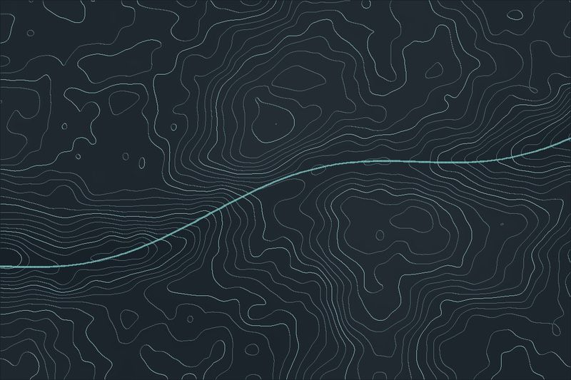

Memorial descritivo
- Imóvel
- Lote ilustrativo
- Município
- Belém, Pará
- Área
- —
- Perímetro
- —
Inicia-se a descrição deste perímetro no vértice V1.
| Vértice | N (m) | E (m) | Azimute | Distância |
|---|
Topografia e regularização de imóveis
Levantamentos para definir os limites de imóveis urbanos e rurais e apoiar a documentação da propriedade, do campo ao cartório.
Medir o meu imóvel
Cada vértice medido em campo vira uma linha do memorial descritivo: coordenadas, azimute e distância até o próximo. Mude o desenho acima e o documento ao lado se reescreve.
Coordenadas ilustrativas em UTM, fuso 22 Sul, SIRGAS 2000. Num levantamento real, cada vértice vem de medição com receptores GNSS de precisão.
Memorial descritivo
Inicia-se a descrição deste perímetro no vértice V1.
| Vértice | N (m) | E (m) | Azimute | Distância |
|---|
Planialtimétrico. Terreno com posição e altitude, curvas de nível e feições, para projeto e obra.
Mapeamento com drone. Ortofotos e modelos do terreno para áreas grandes ou de acesso difícil.


A Axys Topo é uma área nova. Cada trabalho é executado e assinado por profissional habilitado, com responsabilidade técnica registrada.
Empresa nova, equipe experiente.
Conhecer os sóciosExperiência dos profissionais antes da fundação da Axys, apresentada como experiência individual.
As referências técnicas e legais que orientam o planejamento, a execução e os relatórios.
Lei 10.267/2001
Torna obrigatório o georreferenciamento de imóveis rurais para alterações na matrícula.
Norma Técnica do INCRA
Regras de precisão e de levantamento para georreferenciamento, com certificação pelo SIGEF.
Lei 13.465/2017
Regularização fundiária urbana e rural (REURB).
ABNT NBR 13133
Execução de levantamento topográfico.
A aplicação de cada norma depende do projeto e é definida na proposta.
Depende do tamanho, do acesso, da vegetação e do tipo de documento necessário. Com a matrícula ou a escritura em mãos, passamos o orçamento.
Em geral, matrícula ou escritura, documento do proprietário e, se houver, plantas antigas. Para imóvel rural, também o CCIR e o CAR.
O campo depende do tamanho e do acesso; a certificação no SIGEF tem prazo próprio. O cronograma vem no orçamento.
Sim. Os trabalhos são acompanhados de Anotação de Responsabilidade Técnica do profissional habilitado.
Sim, de lotes urbanos a grandes propriedades rurais.
Conte qual imóvel medir e onde fica. Respondemos com o próximo passo.